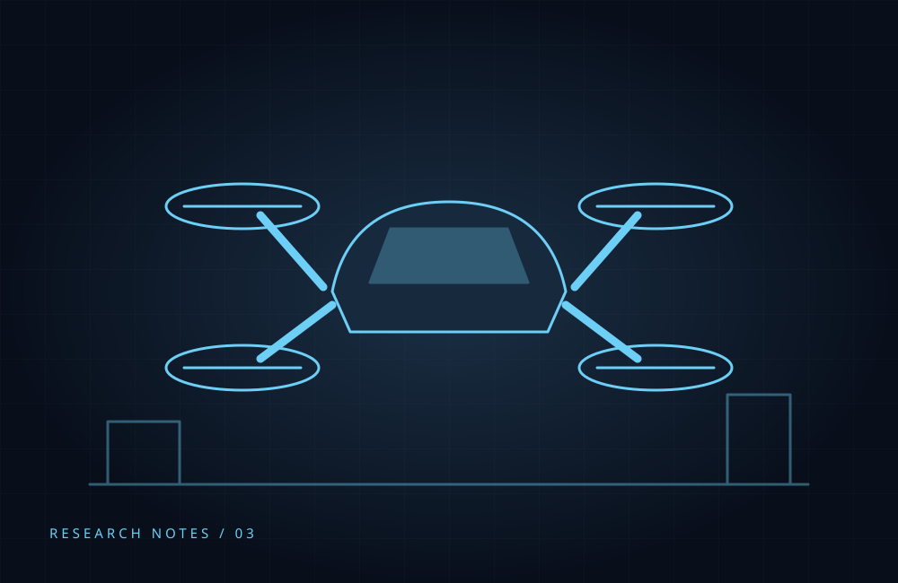

Passenger Drones: A Milestone from 2023
A retrospective on the EH216-S certification reported in October 2023 and the distinction between a milestone and everyday service.

The reported milestone
John Koetsier’s October 2023 Forbes article reported that EHang’s EH216-S had received a type certificate from China’s Civil Aviation Administration. The article described a two-passenger electric aircraft capable of vertical takeoff and landing.
Beyond the headline
The report highlighted testing, redundant systems and remote oversight. It also left practical questions open, including cost and the timing of wider operations.
A historical reading
This is a summary of the 2023 report, not a statement about current service availability. Its lasting lesson is that a technical approval and an accessible transport service are different milestones. Turning a promising aircraft into a dependable customer experience requires more than an impressive demonstration.